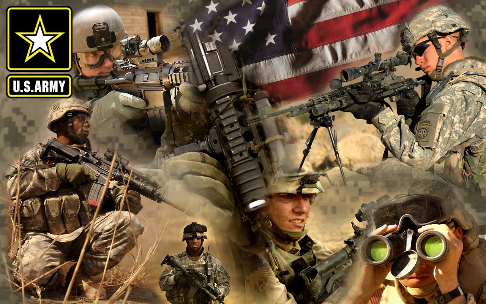

O 1st Special Forces Operational Detachment-Delta (1st SFOD-D), comumente referido como Delta Force (Força Delta em Português), Combat Applications Group (CAG) (Grupo de Aplicações de Combate), "The Unit" (A Unidade), Army Compartmented Element (ACE), ou internamente no JSOC (Joint Special Operations Command; Comando de Operações Especiais Conjuntas) como Task Force Green,[1] a principal força contra-terrorista e de operações especiais do Exército dos Estados Unidos. Oficialmente ela é chamada no Pentágono de Combat Applications Group. Integra o Joint Special Operations Command e está sob controle operacional do mesmo, e faz parte da primeira linha de combate ao terrorismo no país. Sua sede fica em Fort Bragg, no estado da Carolina do Norte, onde divide as instalações com as United States Army Special Forces (conhecidos como Boinas Verdes). É a unidade mais sofisticada em campo que o Exército dos Estados Unidos dispõe, junto com o DEVGRU da Marinha dos Estados Unidos e as unidades de suporte e inteligência do Pentágono, CIA e NSA.
